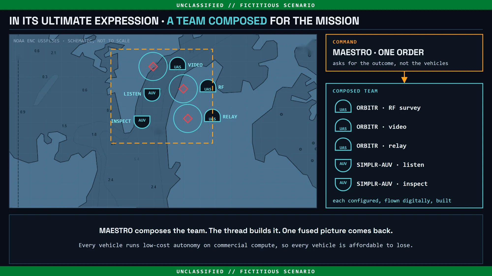
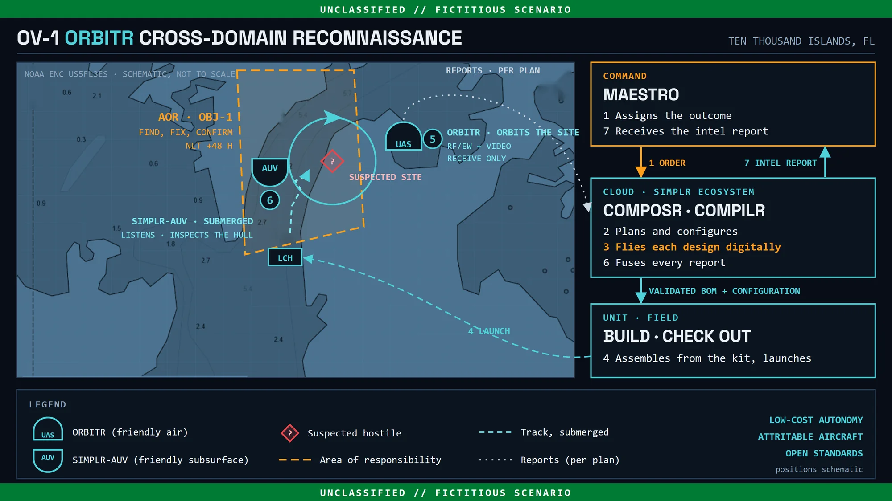

LOW-COST AUTONOMY · ATTRITABLE SYSTEMS
One autonomy ecosystem. Every domain.
Low-cost autonomy for low-cost, attritable vehicles.
A commander asks for an outcome. The Cognitive Vehicles ecosystem plans the mission, configures the right vehicle from a catalog of parts, flies it in simulation before it is built, and runs it on inexpensive commercial computers. Undersea today with SIMPLR-AUV; in the air next with ORBITR.

A COMPLETE AUTONOMOUS MISSION SYSTEM
From order to outcome.
Tasking, mission planning, vehicle configuration, simulation, onboard autonomy and analysis in one coherent system, shared by every vehicle the ecosystem runs.
01TaskMAESTRO turns the commander's order into assignments
→
02PlanCOMPOSR plans each mission on real geography
→
03ConfigureCOMPILR builds the vehicle from a parts catalog
→
04ValidateThe real autonomy flies the mission in simulation
→
05AdaptGIZMO decides on board what is worth a closer look
→
06ReportOne fused product back to the command
THE PRODUCTS
The same products run every vehicle.
Each product does one job well, and none of them cares whether the vehicle swims or flies.
MAESTRO
Turns a commander's order into assignments across the fleet. Asks for outcomes, never dictates how, and launches nothing without approval.
COMPOSR
Plans each mission over real geography: route, sensor plan, communications plan and when to stay silent, and says plainly what it cannot do.
COMPILR
Turns the mission into a validated vehicle definition from a catalog of parts with known performance, proven in simulation before it is built.
GIZMO
Onboard judgment: notices something, decides whether it is worth a closer look, investigates and resumes, recording the reason for every decision.
The Simulated World
The vehicle's own flight software runs against a complete simulated world, fed by a separate computer exactly as real sensors would.
Operator Stations
Browser-delivered, role-based stations from tasking through analysis, the same for real missions and simulated ones.
THE PLATFORMS
Undersea today. In the air next.
Each platform carries the same ecosystem into a new domain.

Running end to end in simulation
SIMPLR-AUV
Multi-spectral maritime reconnaissance: a small, low-cost autonomous underwater vehicle that collects the RF, acoustic, sonar and video picture of an area, silent throughout, and brings it home.
SIMPLR-AUV →
In development
ORBITR
Low-cost autonomy for attritable Group 1/2 fixed-wing aircraft collecting RF/EW and video. The mission defines the aircraft, and each design flies in simulation before it is built.
ORBITR →DEVELOPMENT STATUS
Software-first, evidence-driven development.
The ecosystem runs end to end in simulation today: with SIMPLR-AUV, a commander's order becomes approved sorties, flown by the vehicle's own flight computers against a separate simulation computer, and fused into an intelligence report. Prototype vehicle hardware is in development, and vehicle-level performance figures remain design targets until controlled physical testing is complete.
ABOUT COGNITIVE VEHICLES
Autonomous systems built around mission reasoning.
Cognitive Vehicles LLC builds low-cost autonomy for low-cost, attritable systems: mission software, vehicle configuration, simulation, and the vehicles that carry them. SIMPLR-AUV is the company's first platform, an autonomous underwater vehicle for maritime reconnaissance. ORBITR brings the same ecosystem to small fixed-wing aircraft.
ONE ECOSYSTEM · EVERY DOMAIN
Build the next mission capability.
For research, integration, teaming, and program inquiries, contact Cognitive Vehicles LLC.
wayne@simplr-auv.comWayne Folsom · Founder & CEO
wayne@simplr-auv.com · (949) 326-4252